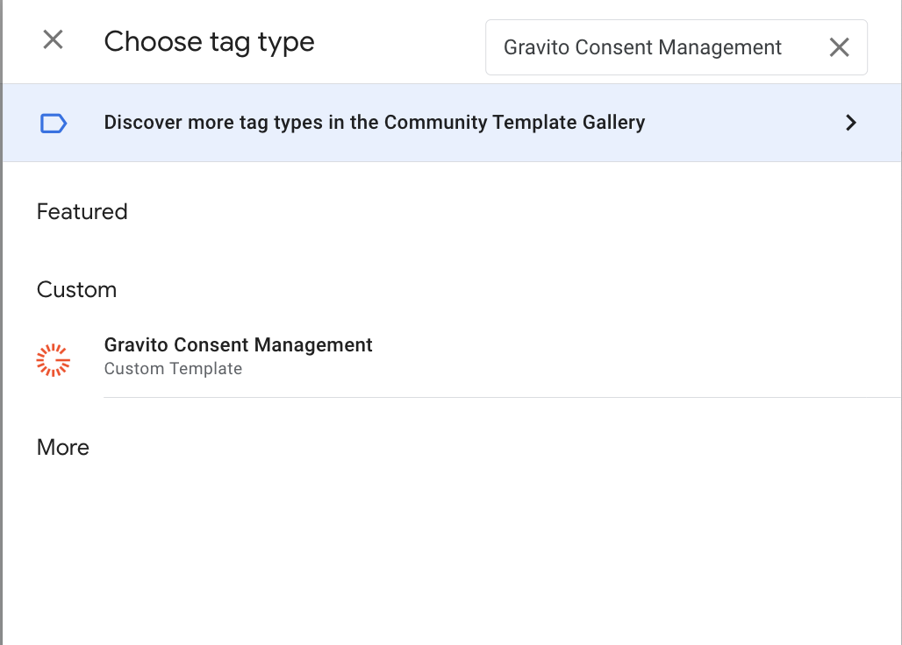
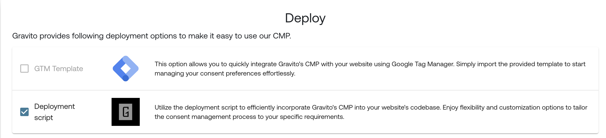
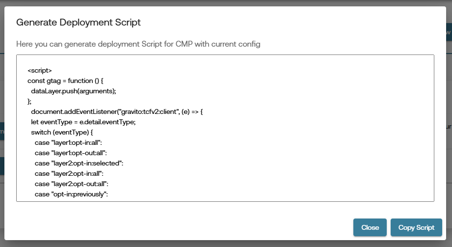

Google Consent Mode v2
What is Google Consent Mode v2?
Google Consent Mode v2 allows you to adjust how Google tags behave based on the user's consent choices. This helps ensure compliance with data protection regulations while still enabling important site functionality.
Consent Mode v2 particularly impacts:
- Cookies
- Ad Personalization
- Analytics Tracking
With Consent Mode v2, Google introduced two new consent signals required to comply with the EU Digital Markets Act (DMA):
✅ Consent Signals:
ad_storageanalytics_storagead_user_data(🆕)ad_personalization(🆕)
The new signals
ad_user_dataandad_personalizationare essential under DMA for platforms like Google Ads and should be set according to user consent.
Official Google Documentation on Consent Mode v2
Enabling Google Consent Mode v2 in Gravito CMP
Creating Config in Admin Portal
- Login to the Gravito Admin Portal.
- Click on the CMP tab.
- Select the TCF 2.2 CMP Configurator from the option.
- On the CMP Config listing page, click the "New Configuration" button to create a new CMP Config.
- Fill in the basic information, then click Next at the bottom-left corner.
- On the TCF Settings Tab:
- Tick the checkbox labeled Use GCM.
-
This will enable the GCMv2 for your CMP config

-
Use GCM Advance Mode is enabled by default. You can uncheck this if you want to use the Basic Mode.
Note: when the using GCM Basic Mode, the GTM template deployment option will not be available.
Consent Mapping:
You’ll now see default mapping for the following Google consent signals:
- ad_storage
- analytics_storage
- ad_user_data
- ad_personalization
You may continue filling out the other CMP configuration steps, or jump directly to the "Deploy" tab.
Gravito TCF 2.2 CMP supports two ways to enable Consent Mode v2:
1. With GTM Template
- In the Deploy tab, you’ll see multiple deployment options.
- Click on the "GTM Template" option.
- Click "Publish".

Note: When you click Publish, the system will validate all required fields. If anything is missing, it will display an error.
Once the config is published, you’ll be provided with a button labeled "Copy GTM Token". Clicking this will copy the GTM token to your clipboard. We will use this token in the GTM template.

- Login to your Google Tag Manager account and click on a new Tag.
Tag Configuration:
- Choose the Gravito Consent Management template from the list.

Fill the fields:
| Field | Description |
|---|---|
| Gravito Token | Paste the CMP token copied from Gravito portal |
| Gravito CMP type | Select Gravito TCF CMP |
| ✅ Enable Google Consent Mode | Enable this to activate GCM support |
Google Consent Mode Settings
| Option | Description |
|---|---|
| Wait for update | Time to wait (in ms) for consent before proceeding (default: 2000) |
| Enable URL passthrough | Optional: Enable if you need to forward consent state via query params |
| Redact ads data | Set to Dynamic (based on ad_storage) for flexible ad personalization |
Default Consent State (Optional)
- Configure regional preferences if needed.
- You can leave it blank to apply globally.

Add Trigger and Save
- Add a Page View or All Pages trigger to fire this tag on every page load.
- Click Save.
Publish the GTM Container
- Submit and Publish the container.
- CMP will now load and handle consent dynamically on your site.
2. Without GTM Template
Deployment (Without Template):
- In the Deploy tab, you'll see multiple deployment options.
- Since we’re not using the GTM template, click on "Deployment Script".
- Click "Publish".

Note: When you click Publish, the system will validate all required fields. If anything is missing, it will display an error.
Once the config is published, you’ll be provided with a deployment script, which you can embed directly in your webpage to activate Consent Mode v2.
Note: If you are using GCM Basic Mode, you will see additional logic in your deployment script. 
below the comment // Insert your GTM script here you can add your GTM script. You can get the GTM script from your GTM account. It will look like this:
(function (w, d, s, l, i) {
w[l] = w[l] || [];
w[l].push({ "gtm.start": new Date().getTime(), event: "gtm.js" });
var f = d.getElementsByTagName(s)[0],
j = d.createElement(s),
dl = l != "dataLayer" ? "&l=" + l : "";
j.async = true;
j.src = "https://www.googletagmanager.com/gtm.js?id=" + i + dl;
f.parentNode.insertBefore(j, f);
})(window, document, "script", "dataLayer", "{{Your_GTM_ID}}");